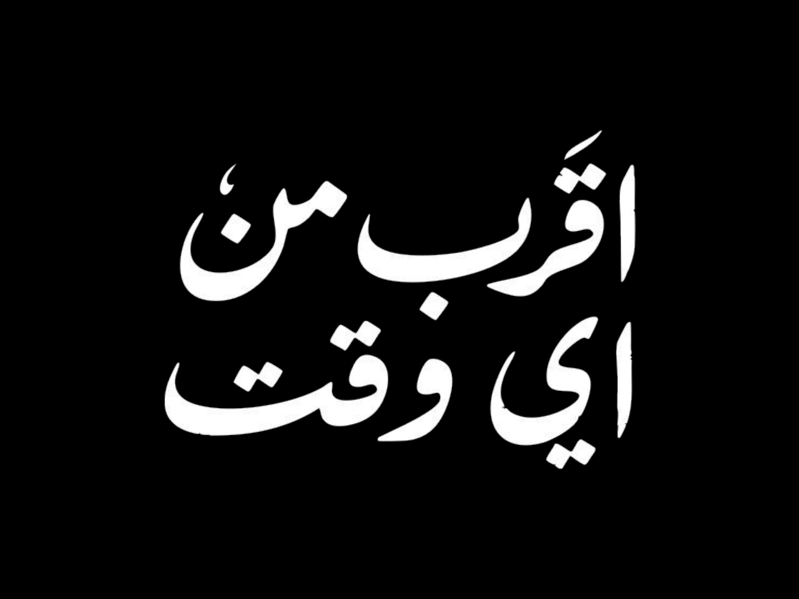
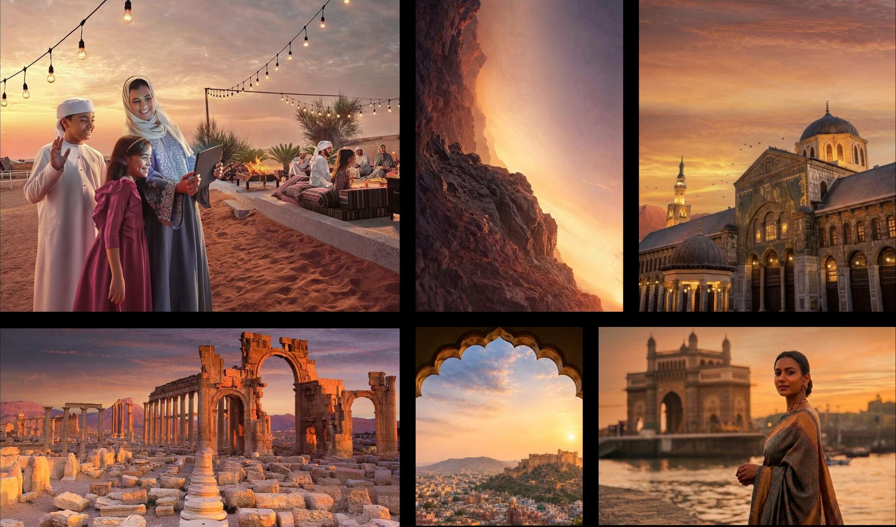
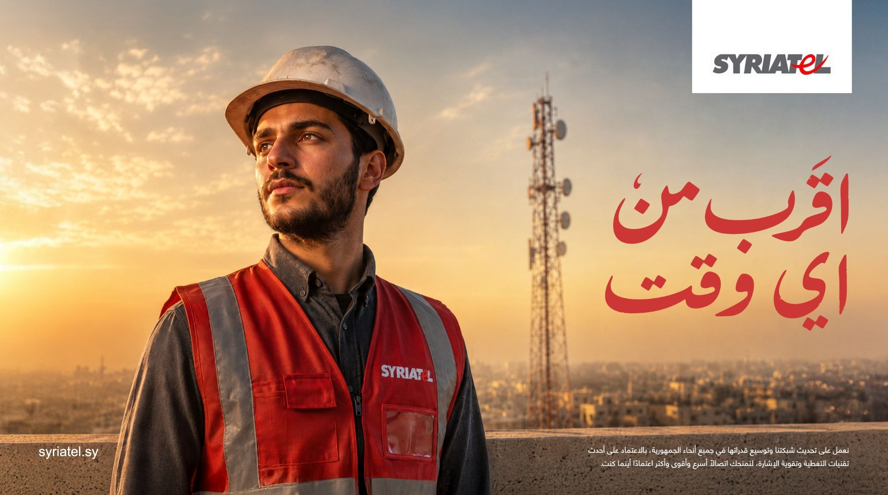
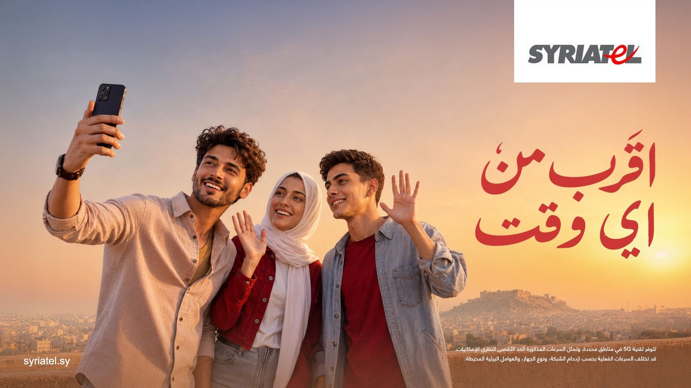
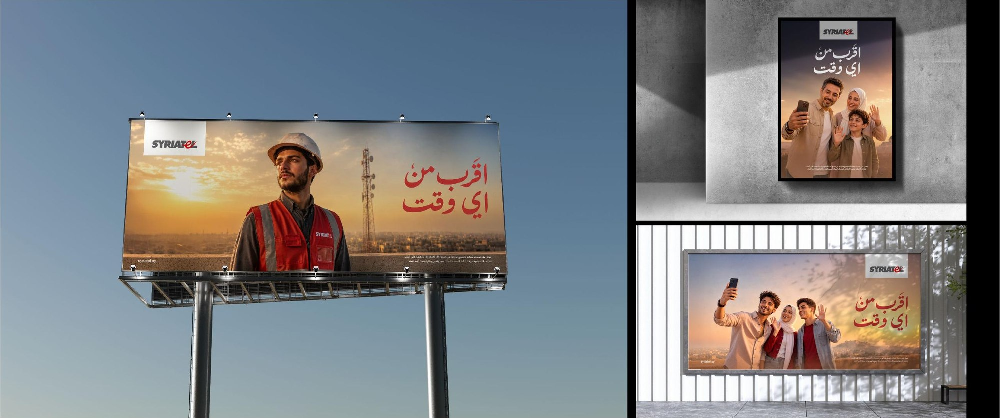
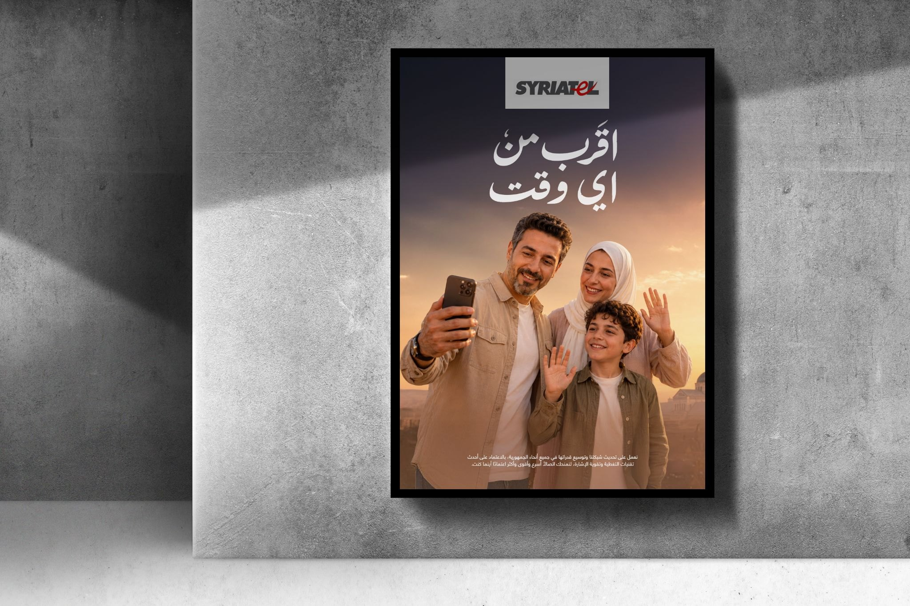
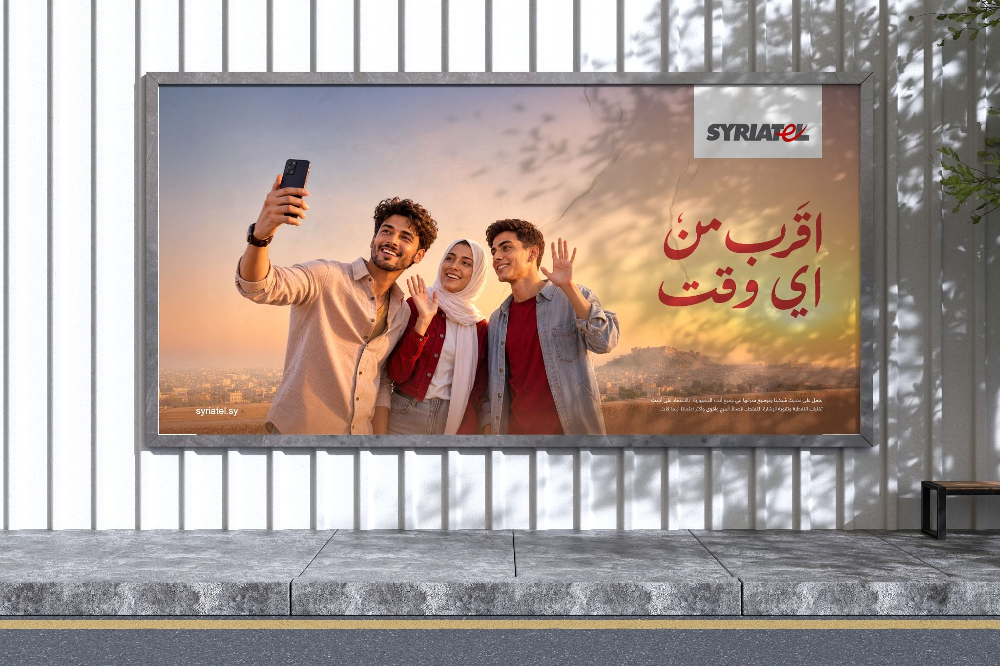
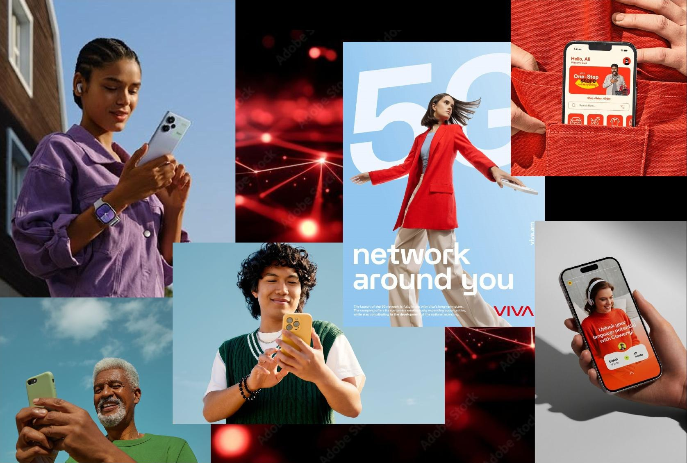

Syriatel
Creative campaign · أقرب من أي وقت · Closer Than Ever
لسنوات
مرّت أجمل اللحظات من بعيد
وبقي القرب… شيئًا ننتظره
ننتظر… اتصال، زيارة، فرصة
واليوم… بدأ هذا الشعور يتغيّر
فكل تواصل… يقرّبنا أكثر
ومع كل خطوة إلى الأمام… تصبح سوريا أقرب
أقرب من أي وقت
Closer Than Ever
A shared feeling of reconnection. As Syria moves into a new chapter, Syriatel helps bring people closer through stronger connections, tangible progress and a renewed commitment to rebuilding trust.
Celebrating the people and moments that matter most.
Backed by network upgrades that make every connection stronger and more reliable.
Bringing people, communities and opportunities closer together.
One truth, countless stories. A grandmother waiting for a call, a returning expat, a business owner, an investor: the desire to feel closer is universal.
From The Bridge to Closer Than Ever
The Bridge defines Syriatel's strategic role: connecting people, communities and the future. Closer Than Ever turns that strategy into a simple, human idea people can feel.
Reconnection, hope and the comfort of feeling close again: a feeling every Syrian already knows. It only needs expressing.
As Syria enters a new chapter, the line mirrors a country reconnecting with its people, communities and future.
Families, returning expats, businesses, partners and investors: one idea for every audience.
Technical upgrades become something people can genuinely feel.
The conversation moves from Syriatel's legacy to its role in Syria's future.
Every promise of closeness is backed by visible network progress.
Today's needs connected to Syria's digital future.
The campaign line
«اقرب من اي وقت» set as a compact two-line brush lockup: soft, rounded strokes that feel personal, built to sit in Syriatel red across every key visual, post and billboard.

Warm. Human. Connected.
Golden-hour light over Syria's landmarks and rooftops, families gathered outdoors, and the glow of a new day breaking over the land.

Golden hour, Syriatel red
Warm sunset tones carry the feeling; Syriatel red carries the line. Everything else stays soft so the people and the light lead.
Facing the horizon, together
Three frames under one warm sky: the engineer building the network, friends sharing the moment, and a family made whole again.


On the street
Roadside billboards, framed posters and street furniture, with the red lockup always on the warm sky.



Bold. Digital. Energetic.
Social swaps uniform templates for human, high-tech stories: bright phones in hand, a glowing network and the Aqrab Elik app.

Closer, one post at a time
Three launch posts: a laugh across any distance, a network that keeps growing, and everyday life made simpler.
Feel it. Believe it. Live it.
A phased rollout that takes people from emotion, to proof, to participation.
- 01 · TeaserFeel itAn emotional film of reunion and return, introducing Closer Than Ever before talking about the network. Broadcast, social, OOH, cinema.
- 02 · ProofBelieve itReal stories, each backed by tangible network improvements. Social series, earned and owned media.
- 03 · ParticipationLive itSyrians share their own stories of feeling closer. Social, influencers, community, app.
Closer
than ever.
Trust isn't rebuilt through promises. It's earned through visible progress, stronger connections and moments people can feel every day.